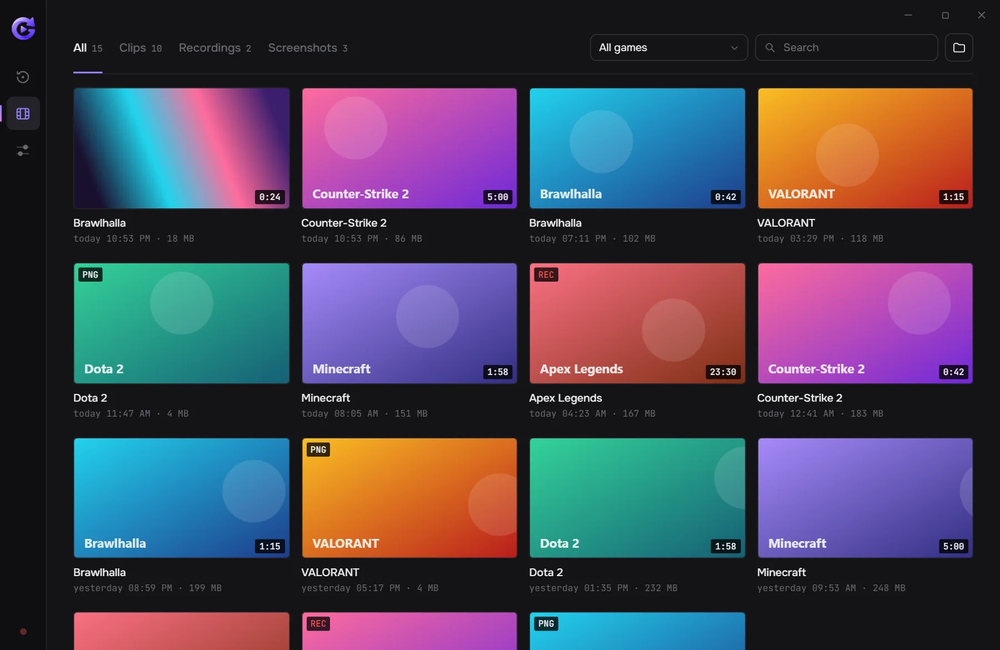
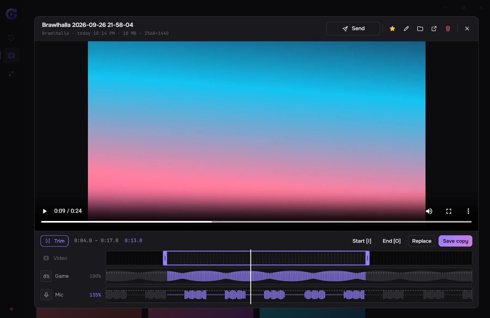

Your game is already recorded. Just decide what to keep.
GeniusClip is a free app for Windows. It keeps the last minutes of your game in memory and saves them as a clip when you press Alt+F8. No account, no ads, and the code is open.
GeniusClip runs on Windows PCs. Open this page there, or copy the link.

What it does
Instant replay
The last minutes of your game are always in memory. Alt+F8 saves them as a clip, even if you never pressed record.
GPU encoding
Your NVIDIA, AMD or Intel graphics card compresses the video, so your frame rate barely moves.
In-game menu
Alt+X opens a menu over the game. It's a separate window and nothing is injected into the game, so it's safe with anti-cheat.
Gallery and trimming
Clips are sorted by game. Cut what you don't need and set game and mic volume separately.
Noise suppression
Removes keyboard clicks, fan hum and background noise from your mic.
Send to Telegram
“Send” copies the clip; paste it into a chat with Ctrl+V.
Favorites
Star a good clip and find it later on the Favorites tab in the gallery.
14 languages
English, русский, қазақша and 11 more interface languages.
Updates
The app checks GitHub for updates and installs them with one click.
Light on resources
Frames where nothing changed aren't encoded again, which saves work and disk space.
Screenshots




Open source
- License
- GeniusClip is free software under the GPL-3.0: you can read the code, build it and change it. Repository on GitHub
- Bugs and ideas
- Found a bug or missing a feature? Tell us: GitHub Issues
- Privacy
- No accounts, no telemetry. The app only goes online to check GitHub for updates.
- Builds
- The installer is built from this open code. It isn’t code-signed yet, so Windows may warn you when installing. Code signing policy
Changelog
- Loading versions…
Questions
Windows says “Windows protected your PC”. Is that OK?
Yes. The installer doesn't have a digital signature yet, so Windows doesn't recognize it. Click “More info”, then “Run anyway”.
Can anti-cheat ban me for it?
No. GeniusClip doesn't inject into games or touch their files — it captures the screen with standard Windows tools, like OBS or Discord.
What PC do I need?
Windows 10 or 11 (64-bit). Best with a recent NVIDIA, AMD or Intel graphics card — then recording barely loads your system.
Where are my clips?
In “Videos\GeniusClip”, with a folder per game. You can change the folder in settings.
Is it free?
Yes. No ads, no sign-up, no subscription.
How do I update?
You don't have to: the app checks for updates and installs them with one click.